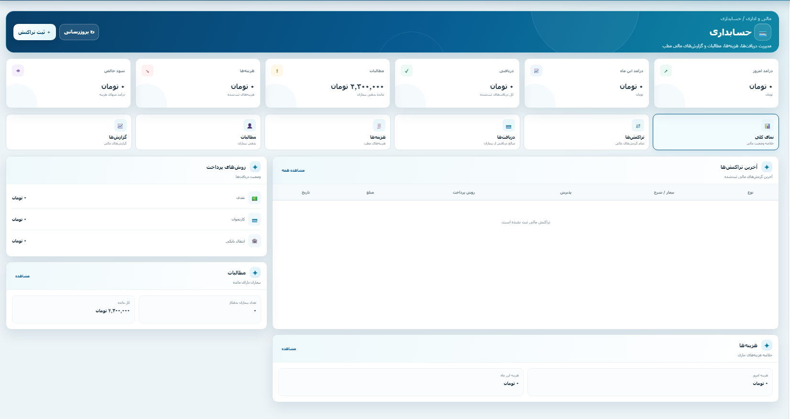
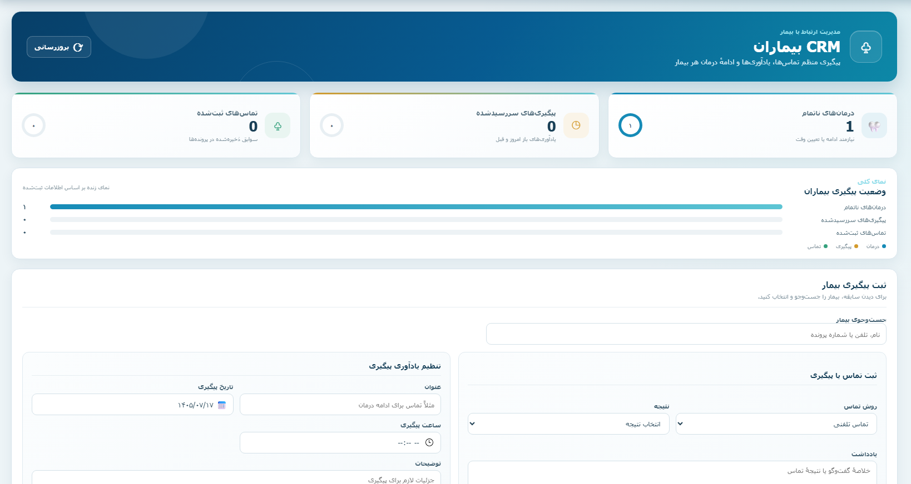
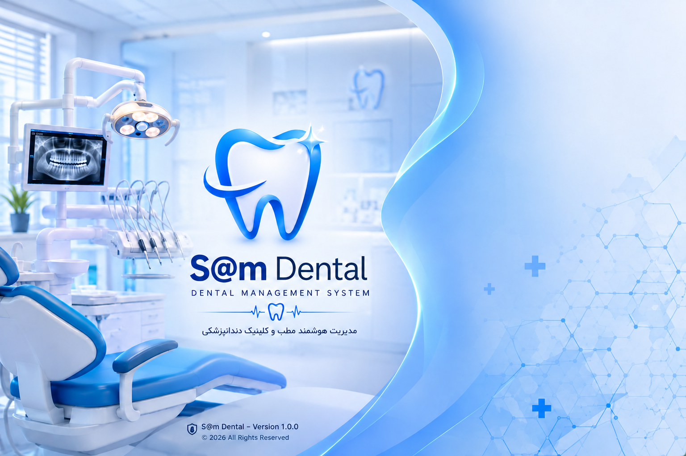
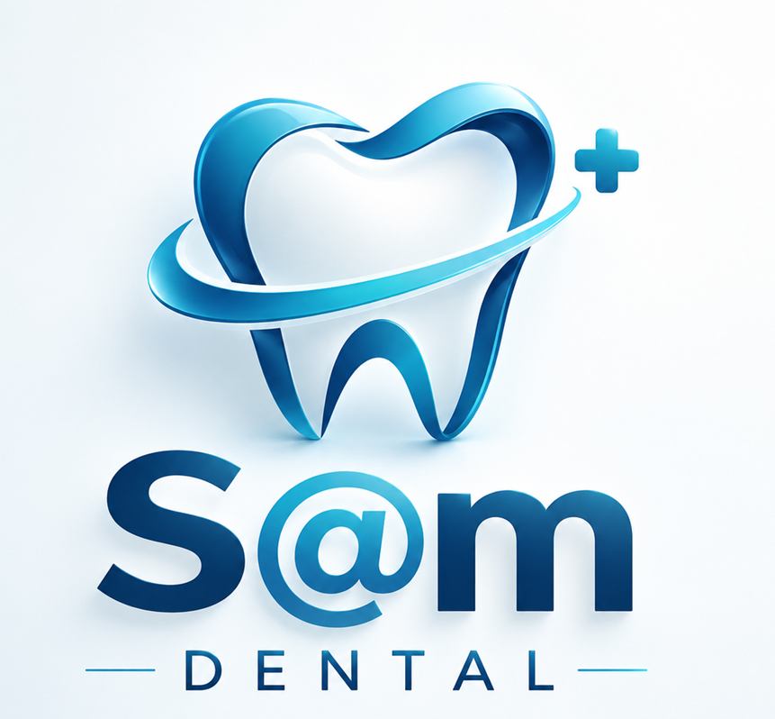

مدیریت مرکز درمانی،
در یک سامانهٔ یکپارچه
سامتک ابزارهای اصلی مدیریت مرکز درمانی را در محیطی منظم و بههمپیوسته گرد هم میآورد.
همه در یک سامانه:قلب تپندهٔ مطب شما
بخشهای اصلی سامانه به هم متصلاند تا از پذیرش بیمار تا گزارشگیری، اطلاعات را یکجا و منظم مدیریت کنید.
داشبورد
نمای کلی کارهای روز مرکز؛ آمار پذیرش، نوبتها، پرداختها و یادآوریهای مهم را در یک نگاه ببینید.
درخواست دموی رایگان ←
حسابوکتاب مطب،
خودکار و همیشه تراز
درآمدها، هزینهها، دریافتیها و گزارشهای مالی مرکز را در یک مسیر منظم دنبال کنید. اطلاعات حسابداری در کنار پذیرشها و پرداختها قرار میگیرد تا مرور عملکرد مطب سادهتر باشد.

هیچ بیماری
فراموش نمیشود
با CRM سامتک مسیر ارتباط با بیمار را منظم دنبال کنید؛ از ثبت سرنخ و پیگیری تماس تا یادآوری نوبت و ادامهٔ درمان. اطلاعات ارتباطی در کنار پروندهٔ بیمار در دسترس تیم مرکز قرار میگیرد.

مطب،
همراه پزشک
با اپلیکیشن موبایل سامدنتال، اطلاعات و کارهای ضروری مطب را در دسترس داشته باشید؛ پروندهها و تصاویر درمانی را مرور کنید و روند پیگیری بیماران را سادهتر پیش ببرید.

مرکز شما در یک کارت NFC
کارت ویزیت هوشمند مینادنت (پلتفرم TikuTag) با فناوری NFC و QR، تمام مسیر ارتباط بیمار با مرکز را در یک لمس ساده جمع میکند: از نوبت آنلاین و مسیریابی روی نقشه تا پرداخت، اشتراکگذاری در شبکههای اجتماعی و نظرسنجی رضایت — در یک صفحهٔ اختصاصی، چندزبانه و همیشه قابل ویرایش لحظهای.
کافیست با نزدیککردن کارت ویزیت هوشمند TikuTag به گوشی، در کوتاهترین زمان اطلاعات مرکز شما روی تلفن همراه مخاطبین ذخیره شود.
پاسخ سوالهایی که بیشتر میپرسید
پیش از تصمیمگیری، جواب پرسشهای رایج دربارهٔ نرمافزار SAM DENTAL را همینجا پیدا کنید.
نرمافزار SAM DENTAL برای چه کسانی مناسب است؟
برای مطبهای دندانپزشکی و کلینیکهایی که میخواهند پذیرش، پرونده و سوابق درمان، نوبتدهی، امور مالی، بیمه و گزارشها را در یک سامانه مدیریت کنند. نسخهٔ مطب و کلینیک متناسب با نوع مرکز ارائه میشود.
آیا نرمافزار SAM DENTAL نسخهٔ اندروید و iOS دارد؟
اپلیکیشن موبایل Android و iOS بهعنوان ماژول جداگانه در نظر گرفته شده است. در جلسهٔ دمو، وضعیت نسخهٔ قابل ارائه و سازگاری آن با سامانهٔ مرکز شما بررسی میشود.
هزینهٔ نرمافزار دندانپزشکی SAM DENTAL چقدر است؟
طبق تعرفهٔ فعلی سایت، نسخهٔ کامل مطب ۱۹٬۵۰۰٬۰۰۰ تومان و نسخهٔ کامل کلینیک ۲۹٬۵۰۰٬۰۰۰ تومان است. ماژولها و کاربران اضافه جداگانه محاسبه میشوند. دیدن تعرفهٔ محصولات ←
نرمافزار SAM DENTAL با چه بیمههایی کار میکند؟
امکان تعریف بیمهٔ پایه و تکمیلی و استفاده از اطلاعات بیمه در پذیرش وجود دارد. بروزرسانی تعرفهها توسط سامدنتال انجام میشود و مرکز، اطلاعات موردنیاز را برای شرکت ارسال میکند.
آیا SAM DENTAL با دستگاه RVG یکپارچه میشود؟
ماژول اتصال سنسورهای تصویربرداری RVG و PSP در تعرفهٔ محصولات بهصورت جداگانه آمده است. سازگاری مدل دستگاه و نرمافزار آن باید پیش از خرید توسط تیم فنی بررسی و تأیید شود.
تفاوت نسخهٔ مطب و کلینیک SAM DENTAL چیست؟
نسخهٔ مطب برای جریان کاری مطب و امکانات اصلی طراحی شده است. نسخهٔ کلینیک امکانات گستردهتری برای مدیریت کادر درمان، محاسبهٔ سهم پزشکان و دستیاران و گزارشهای کاملتر دارد. جزئیات هر بسته در صفحهٔ تعرفهٔ محصولات آمده است.
بخش لابراتوار SAM DENTAL چیست و چه کاری انجام میدهد؟
بخش لابراتوار داخل سامانه برای ثبت و پیگیری سفارشهای لابراتواری و وضعیت آنها در کنار سوابق درمان بیمار است؛ یک بخش از امکانات سامدنتال محسوب میشود.
همین امروز مطبتان را دیجیتال کنید
برای آشنایی با امکانات سامدنتال، درخواست دموی رایگان ثبت کنید یا با ما تماس بگیرید.
- آشنایی با امکانات سامانه
- مشاورهٔ خرید و تعرفه
- ارتباط با پشتیبانی